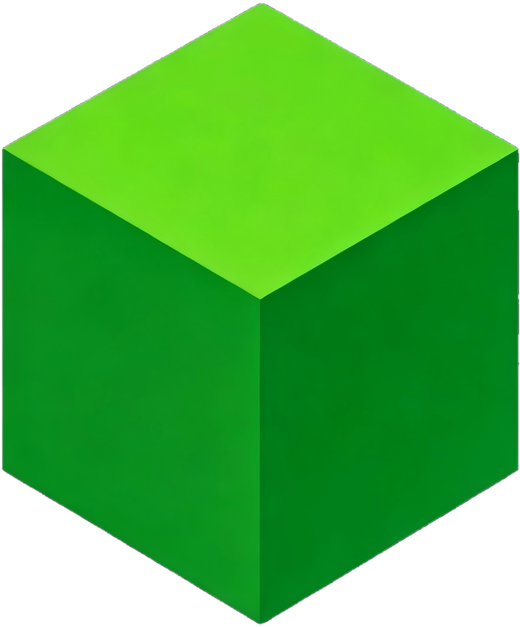

实例管理
多实例并行、版本隔离，还能一键导入 PCL2、HMCL、BakaXL、MultiMC 与官方启动器的存量实例。
MIT 开源 · 完全免费 · 公测进行中
方块盒子 BlockBox 是一款现代跨平台 Minecraft 启动器——除了下载与启动， 还内置 AI 助手、实例助手与3D 皮肤编辑器。 把繁琐留给盒子，把创造留给你。
Windows / Linux / HarmonyOS / Android · 基于 C++ / Qt 原生构建

核心功能
从游戏下载到账户管理，从模组搜索到环境修复——一条龙，不折腾。
多实例并行、版本隔离，还能一键导入 PCL2、HMCL、BakaXL、MultiMC 与官方启动器的存量实例。
Forge、NeoForge、Fabric、OptiFine 一键安装，内置加载器兼容性自动检测，告别环境冲突。
聚合 CurseForge、Modrinth 与 MCMod 中文百科，Mod、光影、材质、存档一站直达，中文说明无障碍。
正版、离线、多账户自由切换，皮肤与头像自动同步，登录状态长期保持。
自动检测本机 Java，版本不匹配时自动下载适配版本，妈妈再也不用担心环境变量啦！
实时 CPU、内存占用曲线与游戏进程状态，卡不卡、卡在哪，一眼看清。
为老旧电脑准备的轻量运行模式，关闭特效、精简加载，老爷机也能顺畅打开启动器。
全套主题样式系统，界面颜色随心换；多语言界面，团队也在持续倾听社区的声音。
独特魅力
不是参数堆砌，而是真正改变玩法的组合拳——AI 助手、实例助手、皮肤编辑器与插件生态。
独有AI 全家桶
内置 AI 助手，云端与本地模型随心切换；Agent 模式配备 19 种工具，能真的替你动手：查 Mod、读配置、修环境。 游戏崩溃了？把日志丢给 AI，几秒钟给出定位与修复方案。 支持 Ollama 本地模型，断网也能用。
游戏伴侣边玩边管
一个伴读窗口装下整个实例：实时帧率、CPU / 内存 / GPU 占用与游玩时长一目了然； 中文打字直接生成指令，一键注入正在运行的游戏； 模组、资源包、光影包免退出启用禁用，AI 助手与联机也在手边。
2D 画布逐格精修，右侧 3D 模型实时旋转预览，画完即存即穿，兼容经典与 Slim 两种模型。
从版本下载到启动的完整基岩版流程，外加独家命令助手：/fill、/setblock 语法即敲即提示，新手也能玩转指令。
基于 Terracotta 的联机方案，一键创建房间，把朋友拉进同一片方块世界，无需复杂端口设置。
独有插件生态
9 款官方插件即装即用，从磁盘清理到 GitHub 加速一应俱全； 还支持安装 .skill AI 技能，让助手学会新领域。 盒子不只是启动器，更是你的 Minecraft 工具站。
横向对比
与 PCL2、HMCL、Verse、Axolotl 美西螈、LauncherX 的 20 项能力逐项对照（新兴启动器于 2026-10 核实）。
| 能力对照 | 方块盒子 | PCL2 | HMCL | Verse | Axolotl 美西螈 | LauncherX |
|---|---|---|---|---|---|---|
| AI 智能 | ||||||
| AI 助手 | ✓ | — | — | ✓ | — | — |
| AI Agent 模式（19 种工具真的动手） | ✓ | — | — | — | — | — |
| AI 技能系统（.skill 可扩展） | ✓ | — | — | — | — | — |
| 本地 AI 模型（Ollama，断网可用） | ✓ | — | — | — | — | — |
| AI 模组翻译工具包 | ✓ | — | — | ✓ | ✓ | — |
| 崩溃日志 AI 分析，一键定位病因 | ✓ | — | — | ✓ | — | — |
| 特色功能 | ||||||
| 皮肤编辑器（2D 画布 + 3D 实时预览） | ✓ | — | — | — | — | — |
| 基岩版完整支持 + 命令助手 | ✓ | — | — | — | — | — |
| 插件系统 | ✓ | — | — | ✓ | — | — |
| 多人联机（一键建房开黑） | ✓ | — | ✓ | ✓ | ✓ | ✓ |
| 基础能力 | ||||||
| 多实例管理 + 版本隔离 | ✓ | ✓ | ✓ | ✓ | ✓ | ✓ |
| 跨启动器实例导入（PCL2 / HMCL / BakaXL / MultiMC / 官方） | ✓ | — | ✓ | — | ✓ | — |
| Forge / NeoForge / Fabric / OptiFine 一键安装 | ✓ | ✓ | ✓ | ✓ | ✓ | ✓ |
| CurseForge / Modrinth 资源中心 | ✓ | ✓ | ✓ | ✓ | ✓ | ✓ |
| MCMod 中文百科聚合 | ✓ | ✓ | ✓ | ✓ | ✓ | ✓ |
| 微软正版 / 离线 / 多账户切换 | ✓ | ✓ | ✓ | ✓ | ✓ | ✓ |
| Java 自动检测与下载 | ✓ | ✓ | ✓ | ✓ | ✓ | ✓ |
| 整合包导入 / 导出 | ✓ | 有限 | ✓ | ✓ | ✓ | 有限 |
| 新用户引导 | ✓ | ✓ | ✓ | ✓ | ✓ | ✓ |
| 运行平台 | 4 大平台 | 仅 Windows | 桌面全平台 | 桌面 + Android | 桌面全平台 | 仅 Windows |
各启动器迭代都很快：老牌对照基于 2026-08 公开资料，新兴启动器于 2026-10 核实；如有出入，欢迎在 GitHub Issues 指正。基础能力之外，方块盒子还有 更多细节 等你发现。
公测下载
方块盒子完全免费，欢迎下载体验并反馈问题，帮助我们把它打磨得更好。
下载即表示同意开源许可协议（MIT）。方块盒子并非 Mojang 或微软官方产品。